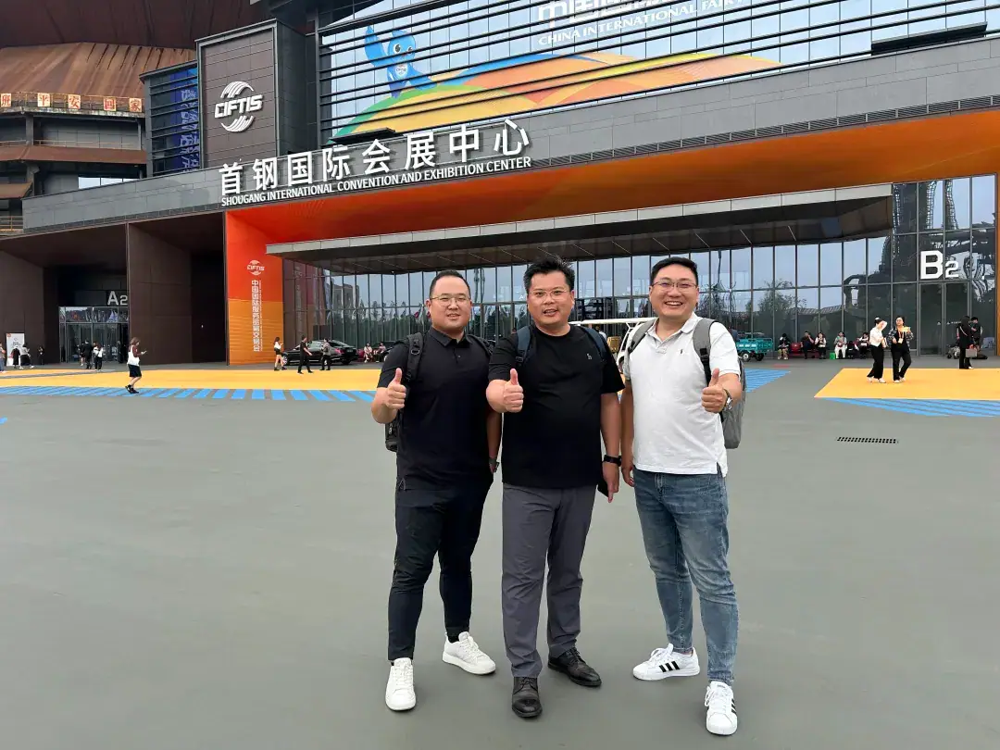
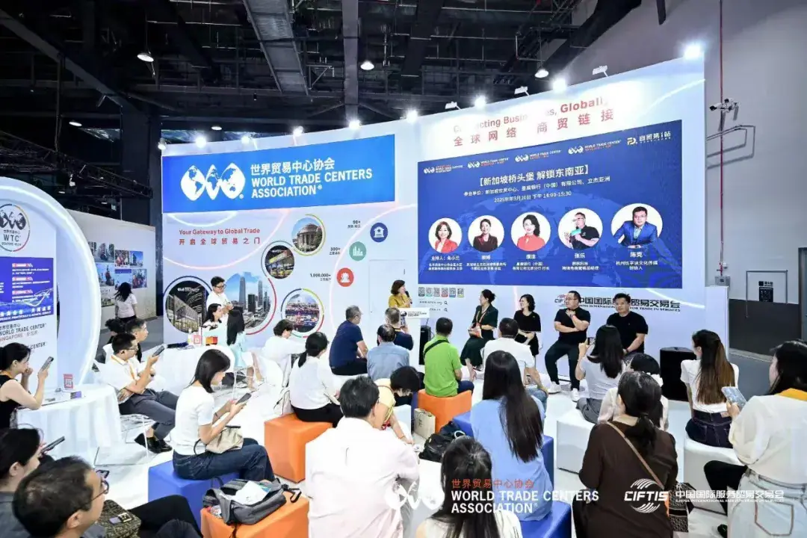
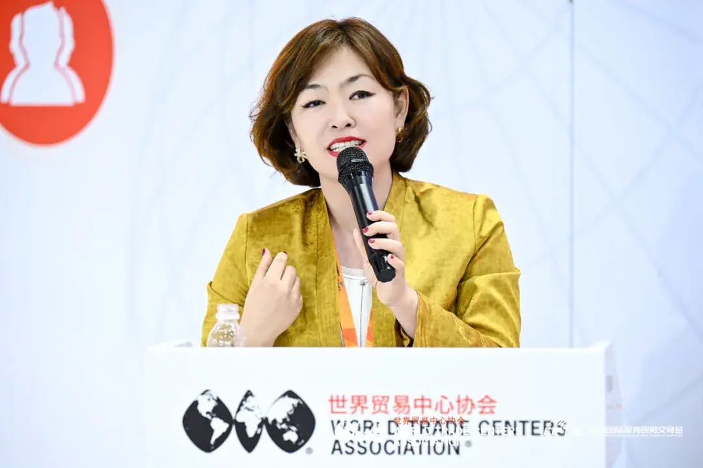
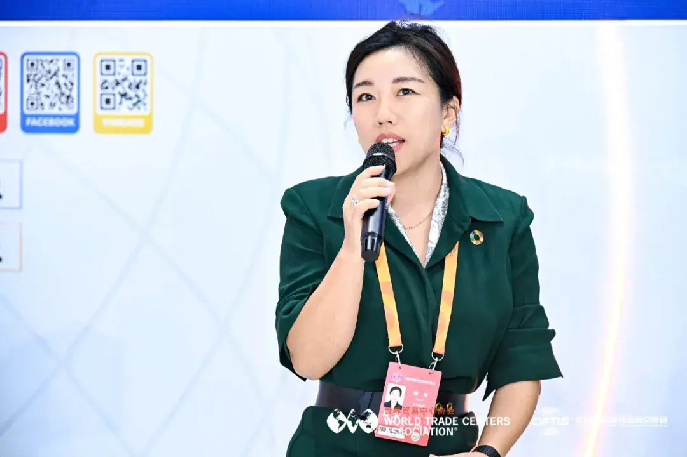
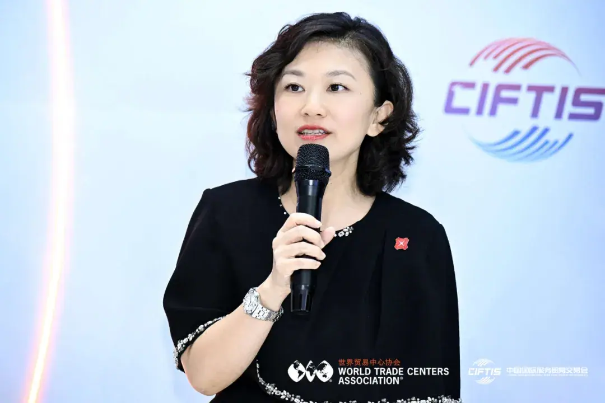
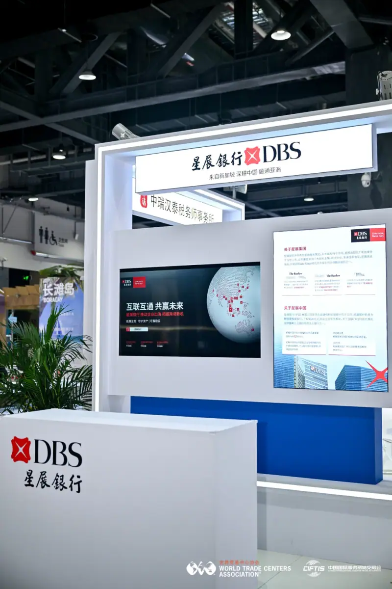
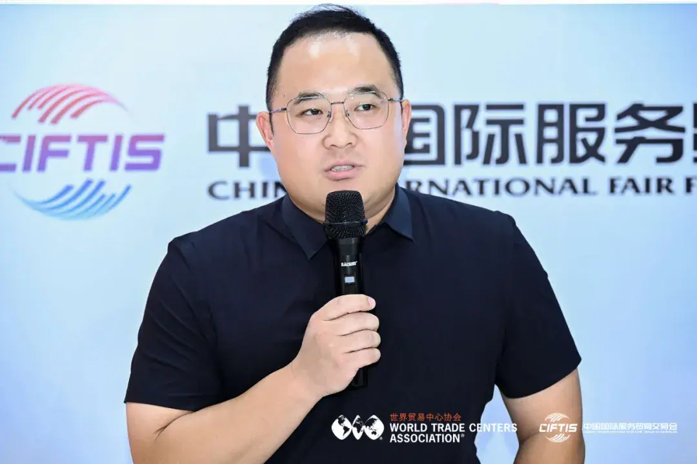
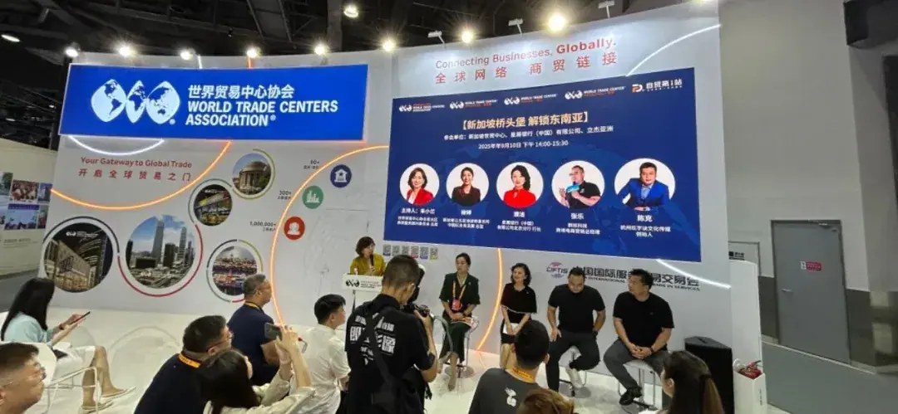
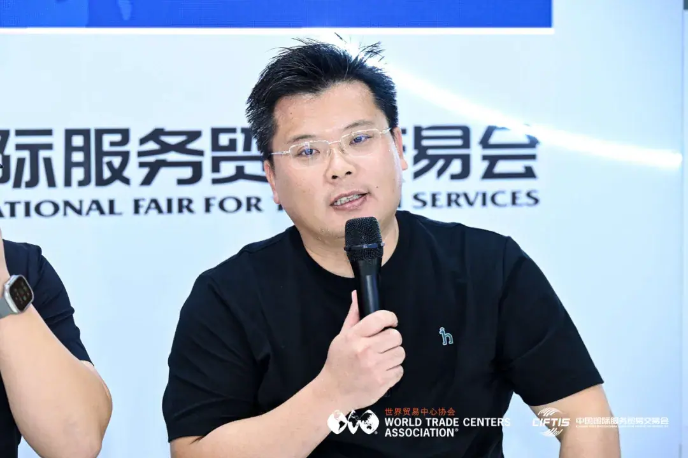
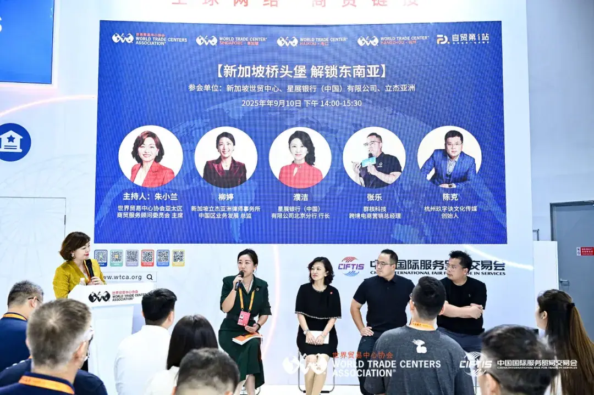

世界贸易中心协会亮相服贸会｜WTC Singapore 东南亚市场合作与国际交流
WTCA at CIFTIS — a Southeast Asia roundtable on compliance, capital, localization and brand.


活动概述
北京服贸会·世界贸易中心协会专场，9月15日。2025年9月10日，北京首钢园，2025年中国国际服务贸易交易会（服贸会）盛大开幕。 本届服贸会以"全球服务 互惠共享"为主题，吸引了百余国家和地区的企业、机构与专家学者共襄盛举。 作为服贸会每年的官方战略合作伙伴，WTCA（世界贸易中心协会）携手成员单位新加坡世贸中心、海口世贸中心、杭州世贸中心等集体亮相展会， 持续发挥全球网络优势，为中国企业"走出去"搭建国际对话与务实合作的平台。
东南亚专场圆桌
在WTCA展馆（1号馆）特别举办的【东南亚专场】圆桌对话上，WTCA亚太区商贸服务顾问委员会主席朱小兰开场指出： "东南亚早已不是'可选项'，而是中国企业出海'必答题'。"

围绕"新加坡桥头堡，解锁东南亚"的话题，来自立杰亚洲、星展银行、群核科技和玖字诀的嘉宾， 分别从科技本地化、法律合规、金融基建和品牌建设四个维度展开深度对话。
立杰亚洲：合规是稀缺能力
立杰亚洲中国区业务发展总监柳婷则从合规角度直言："卷不卷？当然卷。但卷的只是浅层市场。真正懂合规、懂本地规则的企业仍属稀缺。" 她警示，不同国家的法律制度差异巨大，前期省下的尽调成本，可能要以百倍代价偿还。她特别指出，新加坡不仅是税制与金融的优势地， 更因法律体系国际认可度高，成为企业跨境业务的"防火墙"。

星展银行：别以为"钱出去就能随便转"
星展银行（中国）有限公司北京分行行长濮洁从金融基建角度分享经验，提醒企业："最大的错误，是以为'钱出去就能随便转'。" 她指出，越南、泰国等国的外汇管制差异显著，企业应在早期就引入合规团队设计资金架构，"不要等问题发生才补救"。 依托多年深耕东南亚市场的经验，星展银行能够结合企业实际需求，在跨境支付、外汇避险、供应链融资和资金架构设计等方面提供专业支持， 帮助制造业、数字经济、绿色能源等行业的企业稳健拓展国际市场，为企业"走出去"之路提供切实可行的解决方案。

群核科技：本地化不是翻译，而是"重新想象"
群核科技跨境电商营销总经理张乐强调，本地化不是翻译，而是"重新想象"。"很多人问我们怎么做国际化？其实不是'走出去'，而是'走进去'。" 他指出，如果不适配当地审美，产品注定失败。群核科技甚至在马来西亚、印尼设立本地设计团队，用实际行动重构产品体验。 他提醒企业："不要低估东南亚的复杂性，在这里成功本地化，再走向欧美会更从容。"

玖字诀：在东南亚你就是一张白纸
杭州玖字诀文化传媒创始人陈克则把话锋指向品牌："在中国，你的品牌可能家喻户晓。但在东南亚，你就是一张白纸。" 他直言，国内的"爆款打法"难以直接移植，必须从宗教、节日、家庭观念到颜色偏好全面适配，"真正的降维打击，不是靠营销技巧，而是靠深度本地化的诚意。"


共识：出海是一次"再创业"
在总结环节，嘉宾们一致认为，东南亚市场的挑战不仅在于文化差异和法律壁垒，更在于企业需要重新定义自身在当地的价值。 他们强调，出海并不是单纯的市场扩张，而更像是一次"再创业"：企业需要学会在他人的水域中游泳，将合规视为核心竞争力， 把金融作为推动发展的关键桨叶，并以品牌建立长期的信任与尊重。

朱小兰主席最后总结："新加坡是桥头堡，但不是终点。它帮助我们降低风险、积累经验、洞察整个东南亚——但真正的成功， 永远属于那些愿意沉下去、扎进去的企业。"
几位嘉宾的精彩发言也让现场听众意犹未尽，座无虚席。此次专场对话不仅分享了丰富的一线经验，更凸显了WTCA作为全球商务平台的独特价值。 未来，WTCA将继续依托全球网络，携手中国企业在东南亚等关键市场深化布局，推动服务贸易与国际合作迈向更高水平。

本文内容整理自海鑫汇活动记录，文章转载自 WTC 海口世界贸易中心，首发于海鑫汇官方公众号（2025年9月）。 查看公众号原文 →